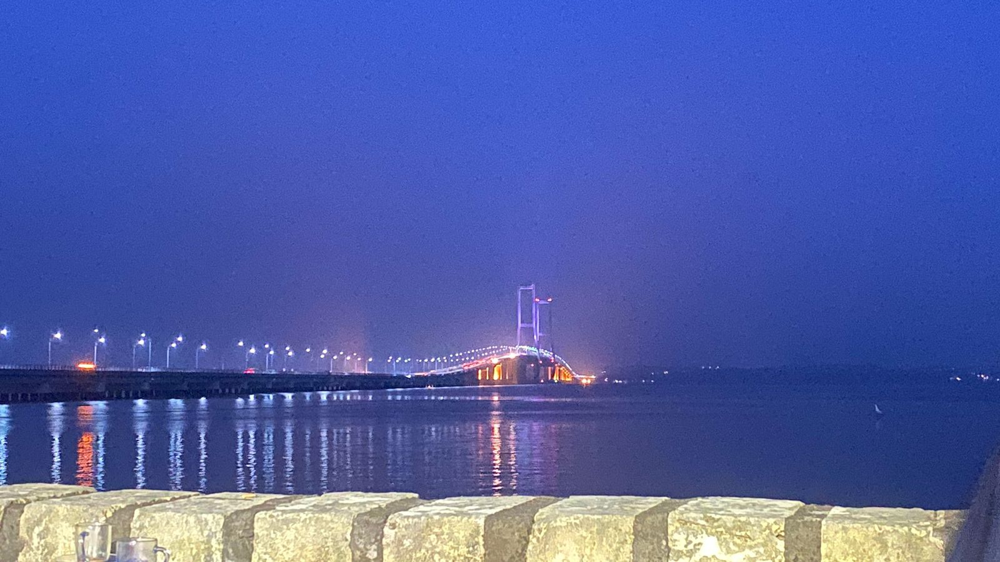
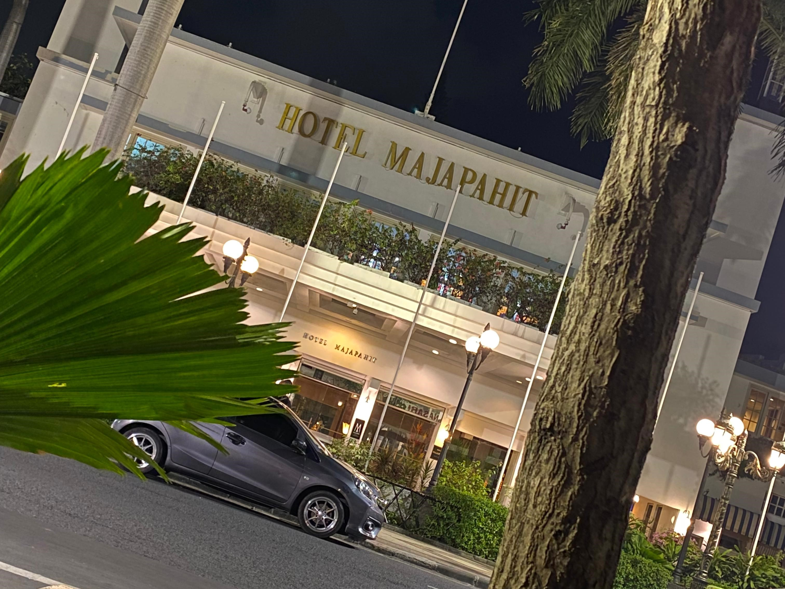
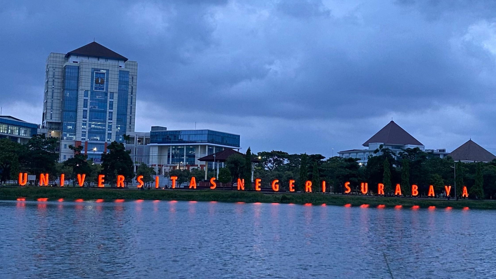
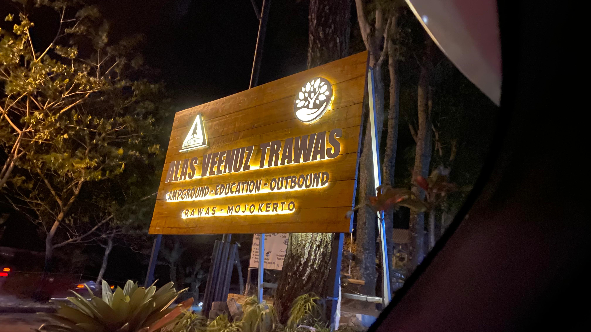
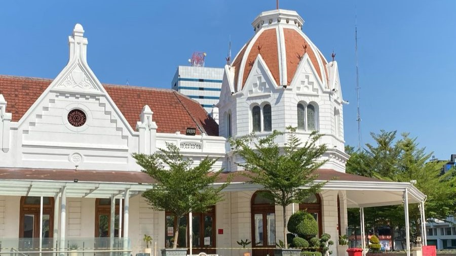

November 20, 2023
The Suramadu Bridge, officially known as the Surabaya-Madura
Bridge, is a cable-stayed bridge connecting the cities of Surabaya
on the island of Java and Bangkalan on the island of Madura in
Indonesia. It is the longest bridge in Indonesia, spanning
approximately 5.4 kilometers (3.4 miles) in length.

ABOUT JOKOPI, Jokopi strives to be a forum for inspiring, telling
stories and building positive culture through a universal
commodity medium, namely coffee.

The Hotel Majapahit Surabaya, formerly known as Hotel Oranje, is a
historic luxury hotel located in Surabaya, Indonesia. Built in
1910 by Lucas Sarkies, a member of the famous Sarkies Brothers
hotelier family, the hotel has a rich colonial heritage and has
hosted numerous notable figures throughout its history.

Universitas Negeri Surabaya (UNESA),
also known as the State University of Surabaya,
is one of the prominent public universities in Indonesia.
Located in Surabaya, the capital city of East Java province,
UNESA has a rich history and a strong commitment to providing quality education and research opportunities.

Alas Venus Trawas is a natural tourist attraction located in the Trawas area,
Mojokerto Regency, East Java, Indonesia.
This place is famous for its charming natural beauty and refreshing cool air,
making it a popular destination for tourists who want to enjoy beautiful nature and take a break from the busy city life.

The Surabaya City Hall, also known as Balai Kota Surabaya,
is the administrative center of Surabaya, a major city in East Java, Indonesia.
Situated on Jenderal Basuki Rahmat Street in the heart of Surabaya,
it stands as a significant landmark reflecting the city's history and administrative prowess.
Dewa 19 is an iconic Indonesian band that emerged in the 1990s and gained widespread popularity both nationally and internationally.
Formed in Surabaya, East Java, in 1986, the band is renowned for its distinctive sound blending rock, pop,
and traditional Indonesian music elements.